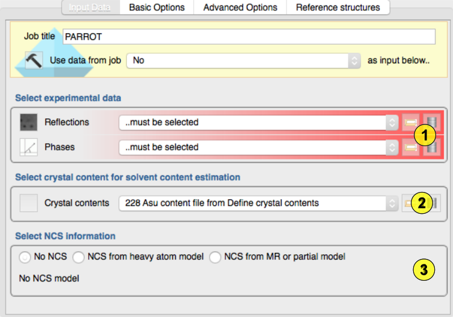
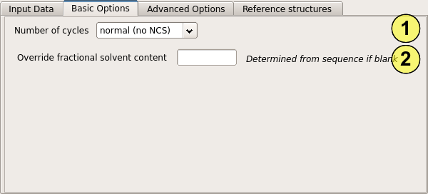
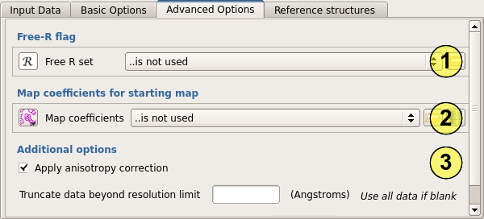
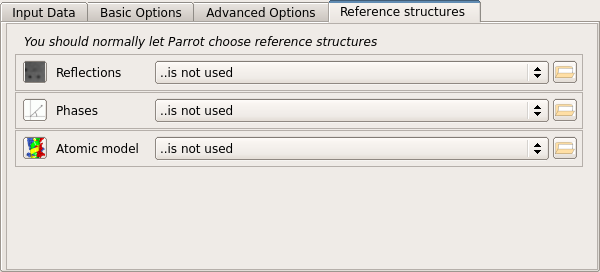
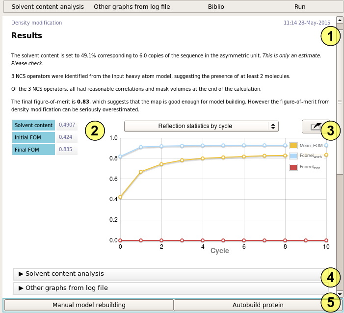

Density Modification (parrot)¶
The “Density modification” task is used to improve initial phase estimates to produce a more interpretable electron density map suing the “Parrot” software. Density modification is always applied as a follow on to experimental phasing to resolve phase ambiguities, particularly in the case of SAD phasing. It may also be applied after molecular replacement to reduce bias towards the search model. Phase improvement is performed using solvent flattening, histogram matching, and optionally non-crystallographic symmetry averaging. The minimum required inputs are the protein sequence, a set of observations, and a set of phases.
Input¶

First the experimental data must be selected (1). A set of observations and a set of phases (from experimental phasing or from refinement of a molecular replacement model) are required.
The AU content must be selected (2) - this should have been entered in the Define AU content task but can be entred on the fly by clicking the file browser button and selecting a sequence file. The specified sequence content is used to estimate the proportion of the asymmetric unit occupied by solvent (the solvent content), and the number of copies of the protein present. If you have a better estimate of the solvent content, you can also provide this value under “Basic options”.
Parrot can optionally perform non-crystallographic symmetry (NCS) averaging. The NCS rotations and translations are be determined from a set of atomic coordinates. These may be from the coordinates of the anomalous scatters or heavy atoms in the case of experimental phasing, or from an initial molecular replacement model or incomplete partial model in the case of either molecular replacement or experimental phasing. To use NCS averaging, select the type of atomic model and then select the model to be used (3).
Basic options¶

The most important option is the number of cycles of density modification to perform (1). By default, a conservative value of 3 cycles is chosen to limit the bias which is introduced by running too many cycles. However when NCS is being used (or occasionally when the solvent content is very high) bias is less of a problem and more cycles may be performed. The menu allows 10 or 20 cycles to be selected, or you may enter your own value.
If you have a good estimate of the solvent content from another source, or think that “Parrot” has inferred the wrong number of molecules in the asymmetric unit, you can override the solvent content by entering a value in the box (2).
Advanced options¶
 You can optionally provide a set of Free-R flags to Parrot (1) to prevent it using the Free set in map calculation. This is not normally necessary, as density modification does not tend to bias the refinement Free-R, and introduces noise into the map which degrades the results.
Map coefficients for a starting map may also be provided (2). This option is useful when a good starting map is available but the corresponding phases are know to be biased - for example after a combined MR-SAD calculation. In this case, the electron density from the refined model would be entered as map coefficients, and the SAD phases only entered on the input page.
An anisotropy correction is usually applied to the data by default (3), this step is robust and so would not normally be omitted. If observations have been measured beyond the realistic limit of the data, these may be removed by entering a resolution cutoff.
Reference structure

Biological macromolecules do not vary sufficiently in their electron density histograms. You should not need to change theses.
Results¶

The report summary (1) describes how well the calculation has worked and provides important numbers for you to check. First, Parrot estimates the number of molecules in the asymmetric unit, and the corresponding solvent content. Check that these values are consistent with your expectations, e.g. from molecular replacement or anomalous scatterers. If the solvent content is wrong, override it under “Basic options”.
If a non-crystallographic model has been provided, the number of operators found is reported. In most simple cases, this should match the number of molecules determined previously. The NCS operators are also checked against the electron density - in some cases the operators are not be supported by the density, in which case they will refine away. The number of operators surviving to the end of the calculation is reported. If most of the operators have been lost, either the NCS model, or the initial phases, may be poor.
The final figure of merit is reported, along with a rough assessment of the likely quality of the map. This is little more than guesswork however - the only real test of a map is whether it can be built.
The results table (2) summarizes the density modification statistics in tabular form. The reflection statistics by cycle graph (3) tells you how the phases are improving over the course of the calculation. Detailed analysis of the likely solvent content and further statistics can be seen in the remaining folders (4).
Follow-on tasks (5) include manual model building - usually to inspect the quality of the map - and automated model building.